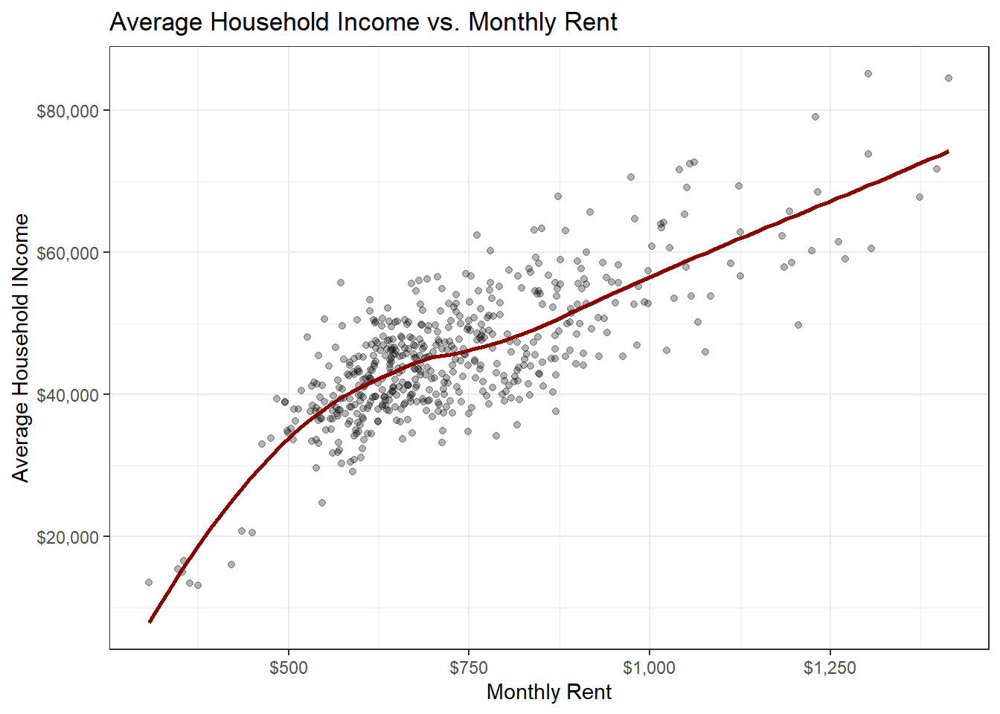
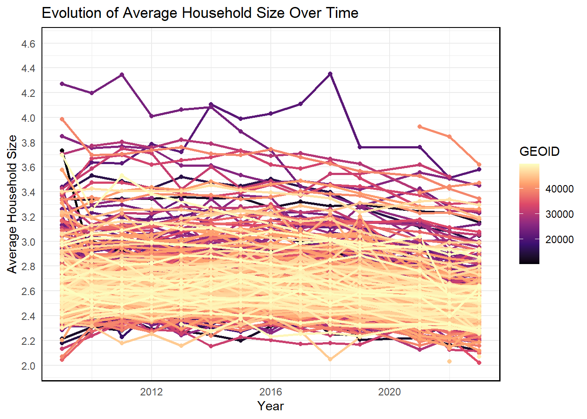
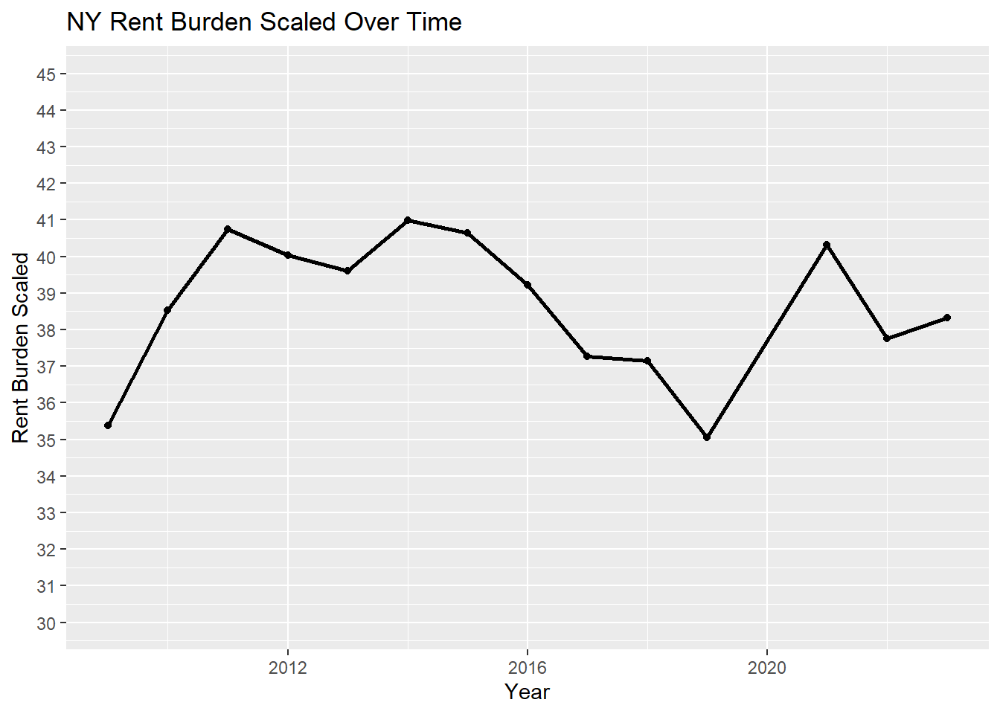
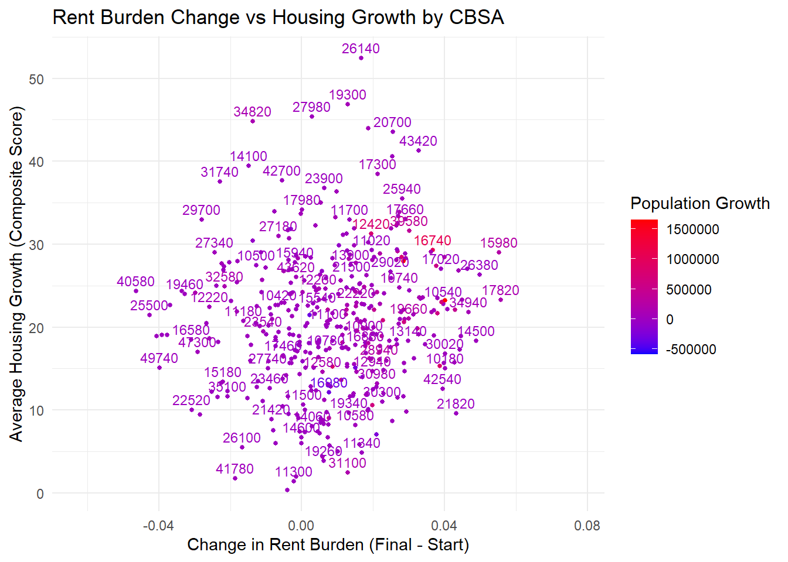
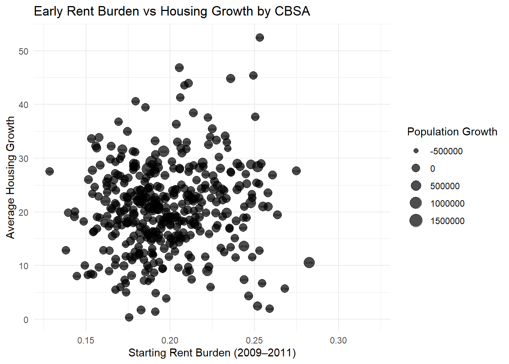
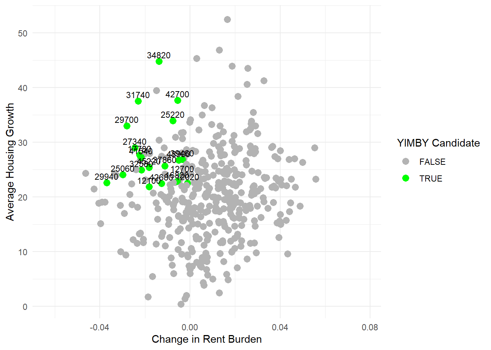

if(!dir.exists(file.path("data", "mp02"))){
dir.create(file.path("data", "mp02"), showWarnings=FALSE, recursive=TRUE)
}
library <- function(pkg){
## Mask base::library() to automatically install packages if needed
## Masking is important here so downlit picks up packages and links
## to documentation
pkg <- as.character(substitute(pkg))
options(repos = c(CRAN = "https://cloud.r-project.org"))
if(!require(pkg, character.only=TRUE, quietly=TRUE)) install.packages(pkg)
stopifnot(require(pkg, character.only=TRUE, quietly=TRUE))
}
library(tidyverse)
library(glue)
library(readxl)
library(tidycensus)
get_acs_all_years <- function(variable, geography="cbsa",
start_year=2009, end_year=2023){
fname <- glue("{variable}_{geography}_{start_year}_{end_year}.csv")
fname <- file.path("data", "mp02", fname)
if(!file.exists(fname)){
YEARS <- seq(start_year, end_year)
YEARS <- YEARS[YEARS != 2020] # Drop 2020 - No survey (covid)
ALL_DATA <- map(YEARS, function(yy){
tidycensus::get_acs(geography, variable, year=yy, survey="acs1") |>
mutate(year=yy) |>
select(-moe, -variable) |>
rename(!!variable := estimate)
}) |> bind_rows()
write_csv(ALL_DATA, fname)
}
read_csv(fname, show_col_types=FALSE)
}
# Household income (12 month)
INCOME <- get_acs_all_years("B19013_001") |>
rename(household_income = B19013_001)
# Monthly rent
RENT <- get_acs_all_years("B25064_001") |>
rename(monthly_rent = B25064_001)
# Total population
POPULATION <- get_acs_all_years("B01003_001") |>
rename(population = B01003_001)
# Total number of households
HOUSEHOLDS <- get_acs_all_years("B11001_001") |>
rename(households = B11001_001)mp02
get_building_permits <- function(start_year = 2009, end_year = 2023){
fname <- glue("housing_units_{start_year}_{end_year}.csv")
fname <- file.path("data", "mp02", fname)
if(!file.exists(fname)){
HISTORICAL_YEARS <- seq(start_year, 2018)
HISTORICAL_DATA <- map(HISTORICAL_YEARS, function(yy){
historical_url <- glue("https://www.census.gov/construction/bps/txt/tb3u{yy}.txt")
LINES <- readLines(historical_url)[-c(1:11)]
CBSA_LINES <- str_detect(LINES, "^[[:digit:]]")
CBSA <- as.integer(str_sub(LINES[CBSA_LINES], 5, 10))
PERMIT_LINES <- str_detect(str_sub(LINES, 48, 53), "[[:digit:]]")
PERMITS <- as.integer(str_sub(LINES[PERMIT_LINES], 48, 53))
data_frame(CBSA = CBSA,
new_housing_units_permitted = PERMITS,
year = yy)
}) |> bind_rows()
CURRENT_YEARS <- seq(2019, end_year)
CURRENT_DATA <- map(CURRENT_YEARS, function(yy){
current_url <- glue("https://www.census.gov/construction/bps/xls/msaannual_{yy}99.xls")
temp <- tempfile()
download.file(current_url, destfile = temp, mode="wb")
fallback <- function(.f1, .f2){
function(...){
tryCatch(.f1(...),
error=function(e) .f2(...))
}
}
reader <- fallback(read_xlsx, read_xls)
reader(temp, skip=5) |>
na.omit() |>
select(CBSA, Total) |>
mutate(year = yy) |>
rename(new_housing_units_permitted = Total)
}) |> bind_rows()
ALL_DATA <- rbind(HISTORICAL_DATA, CURRENT_DATA)
write_csv(ALL_DATA, fname)
}
read_csv(fname, show_col_types=FALSE)
}
PERMITS <- get_building_permits()library(httr2)
library(rvest)
get_bls_industry_codes <- function(){
fname <- file.path("data", "mp02", "bls_industry_codes.csv")
library(dplyr)
library(tidyr)
library(readr)
if(!file.exists(fname)){
resp <- request("https://www.bls.gov") |>
req_url_path("cew", "classifications", "industry", "industry-titles.htm") |>
req_headers(`User-Agent` = "Mozilla/5.0 (Macintosh; Intel Mac OS X 10.15; rv:143.0) Gecko/20100101 Firefox/143.0") |>
req_error(is_error = \(resp) FALSE) |>
req_perform()
resp_check_status(resp)
naics_table <- resp_body_html(resp) |>
html_element("#naics_titles") |>
html_table() |>
mutate(title = str_trim(str_remove(str_remove(`Industry Title`, Code), "NAICS"))) |>
select(-`Industry Title`) |>
mutate(depth = if_else(nchar(Code) <= 5, nchar(Code) - 1, NA)) |>
filter(!is.na(depth))
# These were looked up manually on bls.gov after finding
# they were presented as ranges. Since there are only three
# it was easier to manually handle than to special-case everything else
naics_missing <- tibble::tribble(
~Code, ~title, ~depth,
"31", "Manufacturing", 1,
"32", "Manufacturing", 1,
"33", "Manufacturing", 1,
"44", "Retail", 1,
"45", "Retail", 1,
"48", "Transportation and Warehousing", 1,
"49", "Transportation and Warehousing", 1
)
naics_table <- bind_rows(naics_table, naics_missing)
naics_table <- naics_table |>
filter(depth == 4) |>
rename(level4_title=title) |>
mutate(level1_code = str_sub(Code, end=2),
level2_code = str_sub(Code, end=3),
level3_code = str_sub(Code, end=4)) |>
left_join(naics_table, join_by(level1_code == Code)) |>
rename(level1_title=title) |>
left_join(naics_table, join_by(level2_code == Code)) |>
rename(level2_title=title) |>
left_join(naics_table, join_by(level3_code == Code)) |>
rename(level3_title=title) |>
select(-starts_with("depth")) |>
rename(level4_code = Code) |>
select(level1_title, level2_title, level3_title, level4_title,
level1_code, level2_code, level3_code, level4_code) |>
drop_na() |>
mutate(across(contains("code"), as.integer))
write_csv(naics_table, fname)
}
read_csv(fname, show_col_types=FALSE)
}
INDUSTRY_CODES <- get_bls_industry_codes()library(httr2)
library(rvest)
get_bls_qcew_annual_averages <- function(start_year=2009, end_year=2023){
fname <- glue("bls_qcew_{start_year}_{end_year}.csv.gz")
fname <- file.path("data", "mp02", fname)
YEARS <- seq(start_year, end_year)
YEARS <- YEARS[YEARS != 2020] # Drop Covid year to match ACS
if(!file.exists(fname)){
ALL_DATA <- map(YEARS, .progress=TRUE, possibly(function(yy){
fname_inner <- file.path("data", "mp02", glue("{yy}_qcew_annual_singlefile.zip"))
if(!file.exists(fname_inner)){
request("https://www.bls.gov") |>
req_url_path("cew", "data", "files", yy, "csv",
glue("{yy}_annual_singlefile.zip")) |>
req_headers(`User-Agent` = "Mozilla/5.0 (Macintosh; Intel Mac OS X 10.15; rv:143.0) Gecko/20100101 Firefox/143.0") |>
req_retry(max_tries=5) |>
req_perform(fname_inner)
}
if(file.info(fname_inner)$size < 755e5){
warning(sQuote(fname_inner), "appears corrupted. Please delete and retry this step.")
}
read_csv(fname_inner,
show_col_types=FALSE) |>
mutate(YEAR = yy) |>
select(area_fips,
industry_code,
annual_avg_emplvl,
total_annual_wages,
YEAR) |>
filter(nchar(industry_code) <= 5,
str_starts(area_fips, "C")) |>
filter(str_detect(industry_code, "-", negate=TRUE)) |>
mutate(FIPS = area_fips,
INDUSTRY = as.integer(industry_code),
EMPLOYMENT = as.integer(annual_avg_emplvl),
TOTAL_WAGES = total_annual_wages) |>
select(-area_fips,
-industry_code,
-annual_avg_emplvl,
-total_annual_wages) |>
# 10 is a special value: "all industries" , so omit
filter(INDUSTRY != 10) |>
mutate(AVG_WAGE = TOTAL_WAGES / EMPLOYMENT)
})) |> bind_rows()
write_csv(ALL_DATA, fname)
}
ALL_DATA <- read_csv(fname, show_col_types=FALSE)
ALL_DATA_YEARS <- unique(ALL_DATA$YEAR)
YEARS_DIFF <- setdiff(YEARS, ALL_DATA_YEARS)
if(length(YEARS_DIFF) > 0){
stop("Download failed for the following years: ", YEARS_DIFF,
". Please delete intermediate files and try again.")
}
ALL_DATA
}
WAGES <- get_bls_qcew_annual_averages()library(dplyr)
PERMITS# A tibble: 5,658 × 3
CBSA new_housing_units_permitted year
<dbl> <dbl> <dbl>
1 10180 214 2009
2 10420 741 2009
3 10500 213 2009
4 10580 1380 2009
5 10740 1692 2009
6 10780 396 2009
7 10900 1648 2009
8 11020 125 2009
9 11100 642 2009
10 11180 122 2009
# ℹ 5,648 more rowsWAGES# A tibble: 4,442,181 × 6
YEAR FIPS INDUSTRY EMPLOYMENT TOTAL_WAGES AVG_WAGE
<dbl> <chr> <dbl> <dbl> <dbl> <dbl>
1 2009 C1018 101 8050 342280951 42519.
2 2009 C1018 1011 1769 86660038 48988.
3 2009 C1018 1012 3328 151822573 45620.
4 2009 C1018 1013 2952 103798340 35162.
5 2009 C1018 102 42334 1284997543 30354.
6 2009 C1018 1021 11993 368955371 30764.
7 2009 C1018 1022 0 0 NA
8 2009 C1018 1023 3575 138206437 38659.
9 2009 C1018 1024 4697 149886226 31911.
10 2009 C1018 1025 11950 452254692 37846.
# ℹ 4,442,171 more rowsINDUSTRY_CODES# A tibble: 798 × 8
level1_title level2_title level3_title level4_title level1_code level2_code
<chr> <chr> <chr> <chr> <dbl> <dbl>
1 Agriculture, … Crop produc… Oilseed and… Soybean far… 11 111
2 Agriculture, … Crop produc… Oilseed and… Oilseed (ex… 11 111
3 Agriculture, … Crop produc… Oilseed and… Dry pea and… 11 111
4 Agriculture, … Crop produc… Oilseed and… Wheat farmi… 11 111
5 Agriculture, … Crop produc… Oilseed and… Corn farming 11 111
6 Agriculture, … Crop produc… Oilseed and… Rice farming 11 111
7 Agriculture, … Crop produc… Oilseed and… Other grain… 11 111
8 Agriculture, … Crop produc… Vegetable a… Vegetable a… 11 111
9 Agriculture, … Crop produc… Fruit and t… Orange grov… 11 111
10 Agriculture, … Crop produc… Fruit and t… Citrus (exc… 11 111
# ℹ 788 more rows
# ℹ 2 more variables: level3_code <dbl>, level4_code <dbl>INCOME# A tibble: 7,279 × 4
GEOID NAME household_income year
<dbl> <chr> <dbl> <dbl>
1 10140 Aberdeen, WA Micro Area 36345 2009
2 10180 Abilene, TX Metro Area 42931 2009
3 10300 Adrian, MI Micro Area 45640 2009
4 10380 Aguadilla-Isabela-San Sebasti?n, PR Metro Area 13470 2009
5 10420 Akron, OH Metro Area 47482 2009
6 10500 Albany, GA Metro Area 36218 2009
7 10540 Albany-Lebanon, OR Micro Area 47669 2009
8 10580 Albany-Schenectady-Troy, NY Metro Area 57677 2009
9 10700 Albertville, AL Micro Area 37284 2009
10 10740 Albuquerque, NM Metro Area 46824 2009
# ℹ 7,269 more rowsRENT# A tibble: 7,279 × 4
GEOID NAME monthly_rent year
<dbl> <chr> <dbl> <dbl>
1 10140 Aberdeen, WA Micro Area 650 2009
2 10180 Abilene, TX Metro Area 712 2009
3 10300 Adrian, MI Micro Area 645 2009
4 10380 Aguadilla-Isabela-San Sebasti?n, PR Metro Area 363 2009
5 10420 Akron, OH Metro Area 723 2009
6 10500 Albany, GA Metro Area 624 2009
7 10540 Albany-Lebanon, OR Micro Area 761 2009
8 10580 Albany-Schenectady-Troy, NY Metro Area 833 2009
9 10700 Albertville, AL Micro Area 579 2009
10 10740 Albuquerque, NM Metro Area 726 2009
# ℹ 7,269 more rowsPOPULATION# A tibble: 7,279 × 4
GEOID NAME population year
<dbl> <chr> <dbl> <dbl>
1 10140 Aberdeen, WA Micro Area 71797 2009
2 10180 Abilene, TX Metro Area 160266 2009
3 10300 Adrian, MI Micro Area 99837 2009
4 10380 Aguadilla-Isabela-San Sebasti?n, PR Metro Area 342495 2009
5 10420 Akron, OH Metro Area 699935 2009
6 10500 Albany, GA Metro Area 164238 2009
7 10540 Albany-Lebanon, OR Micro Area 116584 2009
8 10580 Albany-Schenectady-Troy, NY Metro Area 857592 2009
9 10700 Albertville, AL Micro Area 90399 2009
10 10740 Albuquerque, NM Metro Area 856216 2009
# ℹ 7,269 more rowsHOUSEHOLDS# A tibble: 7,279 × 4
GEOID NAME households year
<dbl> <chr> <dbl> <dbl>
1 10140 Aberdeen, WA Micro Area 27759 2009
2 10180 Abilene, TX Metro Area 58052 2009
3 10300 Adrian, MI Micro Area 36835 2009
4 10380 Aguadilla-Isabela-San Sebasti?n, PR Metro Area 91805 2009
5 10420 Akron, OH Metro Area 281769 2009
6 10500 Albany, GA Metro Area 60101 2009
7 10540 Albany-Lebanon, OR Micro Area 43953 2009
8 10580 Albany-Schenectady-Troy, NY Metro Area 336492 2009
9 10700 Albertville, AL Micro Area 32651 2009
10 10740 Albuquerque, NM Metro Area 334647 2009
# ℹ 7,269 more rowsHOUSEHOLD_INCOMES <- left_join(HOUSEHOLDS, INCOME, join_by(GEOID == GEOID, year == year, NAME == NAME)) |> mutate(state = str_extract(NAME, ", (.{2})", group=1))
HOUSEHOLD_INCOMES# A tibble: 7,279 × 6
GEOID NAME households year household_income state
<dbl> <chr> <dbl> <dbl> <dbl> <chr>
1 10140 Aberdeen, WA Micro Area 27759 2009 36345 WA
2 10180 Abilene, TX Metro Area 58052 2009 42931 TX
3 10300 Adrian, MI Micro Area 36835 2009 45640 MI
4 10380 Aguadilla-Isabela-San Sebasti?… 91805 2009 13470 PR
5 10420 Akron, OH Metro Area 281769 2009 47482 OH
6 10500 Albany, GA Metro Area 60101 2009 36218 GA
7 10540 Albany-Lebanon, OR Micro Area 43953 2009 47669 OR
8 10580 Albany-Schenectady-Troy, NY Me… 336492 2009 57677 NY
9 10700 Albertville, AL Micro Area 32651 2009 37284 AL
10 10740 Albuquerque, NM Metro Area 334647 2009 46824 NM
# ℹ 7,269 more rowsHOUSEHOLDS_INCOMES_POPULATION <- left_join(HOUSEHOLD_INCOMES, POPULATION, join_by(GEOID == GEOID, year == year, NAME == NAME))
HOUSEHOLDS_INCOMES_POPULATION # A tibble: 7,279 × 7
GEOID NAME households year household_income state population
<dbl> <chr> <dbl> <dbl> <dbl> <chr> <dbl>
1 10140 Aberdeen, WA Micro … 27759 2009 36345 WA 71797
2 10180 Abilene, TX Metro A… 58052 2009 42931 TX 160266
3 10300 Adrian, MI Micro Ar… 36835 2009 45640 MI 99837
4 10380 Aguadilla-Isabela-S… 91805 2009 13470 PR 342495
5 10420 Akron, OH Metro Area 281769 2009 47482 OH 699935
6 10500 Albany, GA Metro Ar… 60101 2009 36218 GA 164238
7 10540 Albany-Lebanon, OR … 43953 2009 47669 OR 116584
8 10580 Albany-Schenectady-… 336492 2009 57677 NY 857592
9 10700 Albertville, AL Mic… 32651 2009 37284 AL 90399
10 10740 Albuquerque, NM Met… 334647 2009 46824 NM 856216
# ℹ 7,269 more rowslibrary(dplyr)
CBSA1019 <- PERMITS %>%
filter(year >= 2010 & year <= 2019)
max_CBSA1019 <- CBSA1019 %>%
slice_max(order_by = new_housing_units_permitted, n = 1, with_ties = FALSE)
max_CBSA1019_name <- max_CBSA1019 %>%
pull(CBSA)
max_CBSA1019_name[1] 35620Which CBSA (by name) permitted the largest number of new housing units in the decade from 2010 to 2019 (inclusive)?
The CBSA with the most new housing units permitted was 3.562^{4}
library(dplyr)
CBSA10740 <- PERMITS %>%
filter(CBSA == 10740)
max_perm_10740_year <- CBSA10740 %>%
slice_max(order_by = new_housing_units_permitted, n = 1, with_ties = FALSE) %>%
pull(year)
CBSA10740# A tibble: 15 × 3
CBSA new_housing_units_permitted year
<dbl> <dbl> <dbl>
1 10740 1692 2009
2 10740 1764 2010
3 10740 1634 2011
4 10740 2084 2012
5 10740 2606 2013
6 10740 2543 2014
7 10740 2295 2015
8 10740 2465 2016
9 10740 2256 2017
10 10740 2186 2018
11 10740 2148 2019
12 10740 2014 2020
13 10740 4021 2021
14 10740 2852 2022
15 10740 2834 2023max_perm_10740_year[1] 2021In what year did Albuquerque, NM (CBSA Number 10740) permit the most new housing units?
2021 was the year that Albuquerque, NM (CBSA Number 10740) permited the most housing units.
library(dplyr)
HOUSEHOLDS_INCOMES_POPULATION <- HOUSEHOLDS_INCOMES_POPULATION %>%
mutate(total_household_income = households * household_income)
HOUSEHOLDS_INCOMES_POPULATION# A tibble: 7,279 × 8
GEOID NAME households year household_income state population
<dbl> <chr> <dbl> <dbl> <dbl> <chr> <dbl>
1 10140 Aberdeen, WA Micro … 27759 2009 36345 WA 71797
2 10180 Abilene, TX Metro A… 58052 2009 42931 TX 160266
3 10300 Adrian, MI Micro Ar… 36835 2009 45640 MI 99837
4 10380 Aguadilla-Isabela-S… 91805 2009 13470 PR 342495
5 10420 Akron, OH Metro Area 281769 2009 47482 OH 699935
6 10500 Albany, GA Metro Ar… 60101 2009 36218 GA 164238
7 10540 Albany-Lebanon, OR … 43953 2009 47669 OR 116584
8 10580 Albany-Schenectady-… 336492 2009 57677 NY 857592
9 10700 Albertville, AL Mic… 32651 2009 37284 AL 90399
10 10740 Albuquerque, NM Met… 334647 2009 46824 NM 856216
# ℹ 7,269 more rows
# ℹ 1 more variable: total_household_income <dbl>HOUSEHOLDS_INCOMES_POPULATION_STATE <- HOUSEHOLDS_INCOMES_POPULATION %>%
group_by(state, year) %>%
summarise(
total_income = sum(total_household_income),
total_households = sum(households),
total_population = sum(population)
)
HOUSEHOLDS_INCOMES_POPULATION_STATE <- HOUSEHOLDS_INCOMES_POPULATION_STATE %>%
mutate(average_income = total_income/total_population)
HOUSEHOLDS_INCOMES_POPULATION_STATE# A tibble: 728 × 6
# Groups: state [52]
state year total_income total_households total_population average_income
<chr> <dbl> <dbl> <dbl> <dbl> <dbl>
1 AK 2009 11422033506 157987 473213 24137.
2 AK 2010 11948176005 172733 481278 24826.
3 AK 2011 12476589020 176995 486708 25635.
4 AK 2012 12190073504 172996 492807 24736.
5 AK 2013 12627323155 167773 496578 25429.
6 AK 2014 12743066658 171141 498249 25576.
7 AK 2015 13197939163 171076 499421 26426.
8 AK 2016 13754312022 169324 503162 27336.
9 AK 2017 13206858098 171862 500591 26383.
10 AK 2018 13885857215 173861 498119 27877.
# ℹ 718 more rowsHOUSEHOLDS_INCOMES_POPULATION_STATE_2015 <- HOUSEHOLDS_INCOMES_POPULATION_STATE %>%
filter(year == 2015)
HOUSEHOLDS_INCOMES_POPULATION_STATE_2015# A tibble: 52 × 6
# Groups: state [52]
state year total_income total_households total_population average_income
<chr> <dbl> <dbl> <dbl> <dbl> <dbl>
1 AK 2015 13197939163 171076 499421 26426.
2 AL 2015 71252458302 1488309 3918760 18182.
3 AR 2015 34776672740 763351 2010218 17300.
4 AZ 2015 124804732169 2385071 6589624 18940.
5 CA 2015 845185409868 12727278 38700100 21839.
6 CO 2015 123095455889 1839486 4840469 25430.
7 CT 2015 94480626751 1300147 3474313 27194.
8 DC 2015 202663489140 2172310 6098283 33233.
9 DE 2015 3547319106 62477 173533 20442.
10 FL 2015 363239584433 7301618 19783678 18361.
# ℹ 42 more rowsMAX_AVG_INC_STATE <- HOUSEHOLDS_INCOMES_POPULATION_STATE_2015 %>%
ungroup() %>%
slice_max(order_by = average_income, n = 1, with_ties = FALSE) %>%
pull(state)
MAX_AVG_INC_STATE[1] "DC"Which state (not CBSA) had the highest average individual income in 2015? To answer this question, you will need to first compute the total income per CBSA by multiplying the average household income by the number of households, and then sum total income and total population across all CBSAs in a state. With these numbers, you can answer this question.
The state with the highest average individual income in 2015 was DC.
library(dplyr)
library(stringr)
WAGES <- WAGES |> mutate(GEOID = as.double(str_remove(FIPS, "^C"))*10)
c5182_WAGES <- WAGES %>%
filter(INDUSTRY == 5182)
c5182_WAGES_MAX_PER_YEAR <- c5182_WAGES %>%
group_by(YEAR) %>%
summarise(max_employment = max(EMPLOYMENT), .groups = "drop")
NY_MAX <- WAGES %>%
filter(GEOID == 35620) %>%
left_join(c5182_WAGES_MAX_PER_YEAR, by = "YEAR") %>%
filter(EMPLOYMENT == max_employment)
NY_MAX# A tibble: 15 × 8
YEAR FIPS INDUSTRY EMPLOYMENT TOTAL_WAGES AVG_WAGE GEOID max_employment
<dbl> <chr> <dbl> <dbl> <dbl> <dbl> <dbl> <dbl>
1 2009 C3562 518 16349 1626754391 99502. 35620 16349
2 2009 C3562 5182 16349 1626754391 99502. 35620 16349
3 2009 C3562 51821 16349 1626754391 99502. 35620 16349
4 2012 C3562 518 14423 1625393597 112695. 35620 14423
5 2012 C3562 5182 14423 1625393597 112695. 35620 14423
6 2012 C3562 51821 14423 1625393597 112695. 35620 14423
7 2013 C3562 518 14251 1619739693 113658. 35620 14251
8 2013 C3562 5182 14251 1619739693 113658. 35620 14251
9 2013 C3562 51821 14251 1619739693 113658. 35620 14251
10 2014 C3562 518 17828 2201498626 123485. 35620 17828
11 2014 C3562 5182 17828 2201498626 123485. 35620 17828
12 2014 C3562 51821 17828 2201498626 123485. 35620 17828
13 2015 C3562 518 18922 2751424594 145409. 35620 18922
14 2015 C3562 5182 18922 2751424594 145409. 35620 18922
15 2015 C3562 51821 18922 2751424594 145409. 35620 18922Data scientists and business analysts are recorded under NAICS code 5182. What is the last year in which the NYC CBSA had the most data scientists in the country? In recent, the San Francisco CBSA has had the most data scientists.
The most recent year that the NYC CBSA had the most data scientists in the country was in 2015.
library(dplyr)
NY_WAGES <- WAGES %>%
filter(GEOID == 35620)
NY_WAGES# A tibble: 15,210 × 7
YEAR FIPS INDUSTRY EMPLOYMENT TOTAL_WAGES AVG_WAGE GEOID
<dbl> <chr> <dbl> <dbl> <dbl> <dbl> <dbl>
1 2009 C3562 101 694093 45351432178 65339. 35620
2 2009 C3562 1011 0 0 NA 35620
3 2009 C3562 1012 306450 19619006119 64020. 35620
4 2009 C3562 1013 0 0 NA 35620
5 2009 C3562 102 6044935 390950505074 64674. 35620
6 2009 C3562 1021 1480318 68422748758 46222. 35620
7 2009 C3562 1022 252116 24002664869 95205. 35620
8 2009 C3562 1023 714531 104952654659 146883. 35620
9 2009 C3562 1024 1195175 96265810175 80545. 35620
10 2009 C3562 1025 1419237 67013181351 47218. 35620
# ℹ 15,200 more rowsNY_WAGES_52 <- NY_WAGES %>%
filter(INDUSTRY == 52)
NY_WAGES_52# A tibble: 14 × 7
YEAR FIPS INDUSTRY EMPLOYMENT TOTAL_WAGES AVG_WAGE GEOID
<dbl> <chr> <dbl> <dbl> <dbl> <dbl> <dbl>
1 2009 C3562 52 528354 94479998021 178819. 35620
2 2010 C3562 52 519636 103632250413 199432. 35620
3 2011 C3562 52 527335 108996581223 206693. 35620
4 2012 C3562 52 521988 107816036343 206549. 35620
5 2013 C3562 52 524514 107314017412 204597. 35620
6 2014 C3562 52 528489 119105615711 225370. 35620
7 2015 C3562 52 535280 119431006954 223119. 35620
8 2016 C3562 52 536679 118586163642 220963. 35620
9 2017 C3562 52 540300 130116071763 240822. 35620
10 2018 C3562 52 544202 128706315380 236505. 35620
11 2019 C3562 52 548324 132713121248 242034. 35620
12 2021 C3562 52 533044 156065553132 292782. 35620
13 2022 C3562 52 540768 159178860174 294357. 35620
14 2023 C3562 52 552105 160765698817 291187. 35620NY_TOTAL_WAGES_52 <- NY_WAGES_52 %>%
summarise(WAGES_52 = sum(TOTAL_WAGES))
NY_TOTALWAGES_ALL <- NY_WAGES %>%
summarise(WAGES_ALL = sum(TOTAL_WAGES))
NY_52_RATIO <- NY_TOTAL_WAGES_52/NY_TOTALWAGES_ALL
NY_52_RATIO <- NY_52_RATIO %>%
pull(WAGES_52)
NY_52_RATIO[1] 0.04086742NY_TOTAL_WAGES <- NY_WAGES %>%
group_by(YEAR) %>%
summarise(
TOTAL_YEAR_WAGES = sum(TOTAL_WAGES)
)
NY_TOTAL_WAGES# A tibble: 14 × 2
YEAR TOTAL_YEAR_WAGES
<dbl> <dbl>
1 2009 2194200174111
2 2010 2366455158958
3 2011 2452875238158
4 2012 2543568475824
5 2013 2663041532424
6 2014 2587096519796
7 2015 3008221071967
8 2016 3038312046515
9 2017 3176952501734
10 2018 3196707717054
11 2019 3617150803059
12 2021 3636399927489
13 2022 4104601808975
14 2023 4160135177511NY_WAGES_RATIO <- NY_WAGES_52 %>%
left_join(NY_TOTAL_WAGES, join_by(YEAR)) %>%
summarise(
ratio_52 = TOTAL_WAGES/TOTAL_YEAR_WAGES,
YEAR = YEAR
)
NY_52_PEAK <- NY_WAGES_RATIO %>%
slice_max(order_by = ratio_52, n = 1, with_ties = FALSE) %>%
pull(YEAR)
NY_52_PEAK[1] 2014What fraction of total wages in the NYC CBSA was earned by people employed in the finance and insurance industries (NAICS code 52)? In what year did this fraction peak?
The fraction of total wages earned by NAICS code 52 was 0.0408674. This ratio peaked in 2014.
Relationship between monthly rent and average household income per CBSA in 2009
library(ggplot2)
RENT# A tibble: 7,279 × 4
GEOID NAME monthly_rent year
<dbl> <chr> <dbl> <dbl>
1 10140 Aberdeen, WA Micro Area 650 2009
2 10180 Abilene, TX Metro Area 712 2009
3 10300 Adrian, MI Micro Area 645 2009
4 10380 Aguadilla-Isabela-San Sebasti?n, PR Metro Area 363 2009
5 10420 Akron, OH Metro Area 723 2009
6 10500 Albany, GA Metro Area 624 2009
7 10540 Albany-Lebanon, OR Micro Area 761 2009
8 10580 Albany-Schenectady-Troy, NY Metro Area 833 2009
9 10700 Albertville, AL Micro Area 579 2009
10 10740 Albuquerque, NM Metro Area 726 2009
# ℹ 7,269 more rowsINCOME# A tibble: 7,279 × 4
GEOID NAME household_income year
<dbl> <chr> <dbl> <dbl>
1 10140 Aberdeen, WA Micro Area 36345 2009
2 10180 Abilene, TX Metro Area 42931 2009
3 10300 Adrian, MI Micro Area 45640 2009
4 10380 Aguadilla-Isabela-San Sebasti?n, PR Metro Area 13470 2009
5 10420 Akron, OH Metro Area 47482 2009
6 10500 Albany, GA Metro Area 36218 2009
7 10540 Albany-Lebanon, OR Micro Area 47669 2009
8 10580 Albany-Schenectady-Troy, NY Metro Area 57677 2009
9 10700 Albertville, AL Micro Area 37284 2009
10 10740 Albuquerque, NM Metro Area 46824 2009
# ℹ 7,269 more rowsRENT_INCOME <- RENT %>%
left_join(INCOME, join_by(GEOID == GEOID, NAME == NAME, year == year))
RENT_INCOME_2009 <- RENT_INCOME %>%
filter(year == 2009)
RENT_INCOME_2009# A tibble: 517 × 5
GEOID NAME monthly_rent year household_income
<dbl> <chr> <dbl> <dbl> <dbl>
1 10140 Aberdeen, WA Micro Area 650 2009 36345
2 10180 Abilene, TX Metro Area 712 2009 42931
3 10300 Adrian, MI Micro Area 645 2009 45640
4 10380 Aguadilla-Isabela-San Sebasti?n, P… 363 2009 13470
5 10420 Akron, OH Metro Area 723 2009 47482
6 10500 Albany, GA Metro Area 624 2009 36218
7 10540 Albany-Lebanon, OR Micro Area 761 2009 47669
8 10580 Albany-Schenectady-Troy, NY Metro … 833 2009 57677
9 10700 Albertville, AL Micro Area 579 2009 37284
10 10740 Albuquerque, NM Metro Area 726 2009 46824
# ℹ 507 more rowsggplot(RENT_INCOME_2009, aes(x = monthly_rent, y = household_income)) +
geom_point(alpha=0.3) + labs(title = "Average Household Income vs. Monthly Rent") +
xlab("Monthly Rent") + ylab("Average Household INcome") +
stat_smooth(se = FALSE, color = "red4") + scale_x_continuous(labels=scales::dollar) +
scale_y_continuous(labels=scales::dollar) + theme_bw()
The evolution of average household size over time. Use different lines to represent different CBSAs.
library(ggplot2)
library(dplyr)
HOUSEHOLDS_INCOMES_POPULATION <- HOUSEHOLDS_INCOMES_POPULATION %>%
mutate(household_size = population/households)
HOUSEHOLDS_INCOMES_POPULATION# A tibble: 7,279 × 9
GEOID NAME households year household_income state population
<dbl> <chr> <dbl> <dbl> <dbl> <chr> <dbl>
1 10140 Aberdeen, WA Micro … 27759 2009 36345 WA 71797
2 10180 Abilene, TX Metro A… 58052 2009 42931 TX 160266
3 10300 Adrian, MI Micro Ar… 36835 2009 45640 MI 99837
4 10380 Aguadilla-Isabela-S… 91805 2009 13470 PR 342495
5 10420 Akron, OH Metro Area 281769 2009 47482 OH 699935
6 10500 Albany, GA Metro Ar… 60101 2009 36218 GA 164238
7 10540 Albany-Lebanon, OR … 43953 2009 47669 OR 116584
8 10580 Albany-Schenectady-… 336492 2009 57677 NY 857592
9 10700 Albertville, AL Mic… 32651 2009 37284 AL 90399
10 10740 Albuquerque, NM Met… 334647 2009 46824 NM 856216
# ℹ 7,269 more rows
# ℹ 2 more variables: total_household_income <dbl>, household_size <dbl>ggplot(HOUSEHOLDS_INCOMES_POPULATION, aes(x = year, y = household_size, color = GEOID, group = GEOID )) + geom_line(linewidth = 1) + geom_point(size = 1.5) + scale_y_continuous(
limits = c(2, 4.6),
breaks = seq(2, 4.6, 0.2) ) +
labs(
title = "Evolution of Average Household Size Over Time",
x = "Year",
y = "Average Household Size",
color = "GEOID"
) + scale_color_viridis_c(option = "magma") + theme_minimal() +
theme(
panel.border = element_rect(color = "black", fill = NA, linewidth = 0.8))
library(DT)
library(ggplot2)
library(dplyr)
library(stringr)
RENT_INCOME <- RENT_INCOME %>%
mutate(yearly_rent_burden_ratio = (monthly_rent*12)/household_income,
rent_burden_scaled = (yearly_rent_burden_ratio - min(yearly_rent_burden_ratio)) /
(max(yearly_rent_burden_ratio) - min(yearly_rent_burden_ratio)) * 100)
format_titles <- function(df){
colnames(df) <- str_replace_all(colnames(df), "_", " ") |> str_to_title()
df
}
NY_RENT_INCOME <- RENT_INCOME %>%
filter(GEOID == 35620)
NY_RENT_INCOME |>
format_titles() |>
head(n=20) |>
datatable(options=list(searching=FALSE, info=FALSE)) |>
formatRound(c('Yearly Rent Burden Ratio', 'Rent Burden Scaled'))ggplot(NY_RENT_INCOME, aes(x = year, y = rent_burden_scaled)) + geom_line(linewidth = 1) + geom_point(size = 1.5) + scale_y_continuous(
limits = c(30, 45),
breaks = seq(30, 45, 1) ) +
labs(
title = "NY Rent Burden Scaled Over Time",
x = "Year",
y = "Rent Burden Scaled",
)
TOP10_RENT_INCOME <- RENT_INCOME %>%
slice_max(order_by = rent_burden_scaled, n = 10, with_ties = FALSE)
BOT10_RENT_INCOME <- RENT_INCOME %>%
slice_min(order_by = rent_burden_scaled, n = 10, with_ties = FALSE) %>%
arrange(desc(rent_burden_scaled))
TOP10_BOT10_RENT_INCOME <- bind_rows(TOP10_RENT_INCOME, BOT10_RENT_INCOME)
TOP10_BOT10_RENT_INCOME |>
format_titles() |>
head(n=20) |>
datatable(options=list(searching=FALSE, info=FALSE)) |>
formatRound(c('Yearly Rent Burden Ratio', 'Rent Burden Scaled'))- An ‘instantaneous’ measure of housing growth that depends on the absolute population of a CBSA and the number of new housing units permitted that year.
- A ‘rate-based’ measure of housing growth that compares the number of housing permits to the population growth over a 5 year lookback window.
library(ggplot2)
library(dplyr)
library(stringr)
library(DT)
POPULATION# A tibble: 7,279 × 4
GEOID NAME population year
<dbl> <chr> <dbl> <dbl>
1 10140 Aberdeen, WA Micro Area 71797 2009
2 10180 Abilene, TX Metro Area 160266 2009
3 10300 Adrian, MI Micro Area 99837 2009
4 10380 Aguadilla-Isabela-San Sebasti?n, PR Metro Area 342495 2009
5 10420 Akron, OH Metro Area 699935 2009
6 10500 Albany, GA Metro Area 164238 2009
7 10540 Albany-Lebanon, OR Micro Area 116584 2009
8 10580 Albany-Schenectady-Troy, NY Metro Area 857592 2009
9 10700 Albertville, AL Micro Area 90399 2009
10 10740 Albuquerque, NM Metro Area 856216 2009
# ℹ 7,269 more rowsPERMITS# A tibble: 5,658 × 3
CBSA new_housing_units_permitted year
<dbl> <dbl> <dbl>
1 10180 214 2009
2 10420 741 2009
3 10500 213 2009
4 10580 1380 2009
5 10740 1692 2009
6 10780 396 2009
7 10900 1648 2009
8 11020 125 2009
9 11100 642 2009
10 11180 122 2009
# ℹ 5,648 more rowsHOUSING_GROWTH <- POPULATION %>%
left_join(PERMITS, join_by(year == year, GEOID == CBSA))
HOUSING_GROWTH <- HOUSING_GROWTH %>%
group_by(GEOID) %>%
arrange(year) %>%
mutate(
pop_lag5 = lag(population, 5),
pop_growth_5yr = (population - pop_lag5) / pop_lag5 * 100,
housing_growth_rate = new_housing_units_permitted / pop_growth_5yr,
rate_scaled = (housing_growth_rate - min(housing_growth_rate, na.rm = TRUE)) /
(max(housing_growth_rate, na.rm = TRUE) - min(housing_growth_rate, na.rm = TRUE)) * 100
) %>%
ungroup() %>%
select(-pop_lag5)
HOUSING_GROWTH <- HOUSING_GROWTH %>%
mutate(
housing_growth_instant = new_housing_units_permitted / population,
instant_scaled = (housing_growth_instant - min(housing_growth_instant, na.rm = TRUE)) /
(max(housing_growth_instant, na.rm = TRUE) - min(housing_growth_instant, na.rm = TRUE)) * 100)
TOP20_GROWTH_INST <- HOUSING_GROWTH %>%
slice_max(order_by = instant_scaled, n = 20, with_ties = FALSE)
BOT20_GROWTH_INST <- HOUSING_GROWTH %>%
slice_min(order_by = instant_scaled, n = 20, with_ties = FALSE) %>%
arrange(desc(instant_scaled))
TOP20_GROWTH_5YR <- HOUSING_GROWTH %>%
slice_max(order_by = rate_scaled, n = 20, with_ties = FALSE)
BOT20_GROWTH_5YR <- HOUSING_GROWTH %>%
slice_min(order_by = rate_scaled, n = 20, with_ties = FALSE) %>%
arrange(desc(rate_scaled))
TOP20_BOT20_GROWTH_5YR <- bind_rows(TOP20_GROWTH_5YR, BOT20_GROWTH_5YR)
TOP20_BOT20_GROWTH_5YR |>
format_titles() |>
head(n=40) |>
datatable(options=list(searching=FALSE, info=FALSE)) |>
formatRound(c('Pop Growth 5yr','Housing Growth Rate', 'Rate Scaled','Housing Growth Instant', 'Instant Scaled'))TOP20_BOT20_GROWTH_INST <- bind_rows(TOP20_GROWTH_INST, BOT20_GROWTH_INST)
TOP20_BOT20_GROWTH_INST |>
format_titles() |>
head(n=40) |>
datatable(options=list(searching=FALSE, info=FALSE)) |>
formatRound(c('Housing Growth Instant', 'Instant Scaled', 'Pop Growth 5yr','Housing Growth Rate', 'Rate Scaled'))HOUSING_GROWTH <- HOUSING_GROWTH %>%
mutate(composite_score = if_else(
is.na(rate_scaled),instant_scaled,
(instant_scaled + rate_scaled)/2
))
HOUSING_GROWTH# A tibble: 7,279 × 11
GEOID NAME population year new_housing_units_pe…¹ pop_growth_5yr
<dbl> <chr> <dbl> <dbl> <dbl> <dbl>
1 10140 Aberdeen, WA Mi… 71797 2009 NA NA
2 10180 Abilene, TX Met… 160266 2009 214 NA
3 10300 Adrian, MI Micr… 99837 2009 NA NA
4 10380 Aguadilla-Isabe… 342495 2009 NA NA
5 10420 Akron, OH Metro… 699935 2009 741 NA
6 10500 Albany, GA Metr… 164238 2009 213 NA
7 10540 Albany-Lebanon,… 116584 2009 NA NA
8 10580 Albany-Schenect… 857592 2009 1380 NA
9 10700 Albertville, AL… 90399 2009 NA NA
10 10740 Albuquerque, NM… 856216 2009 1692 NA
# ℹ 7,269 more rows
# ℹ abbreviated name: ¹new_housing_units_permitted
# ℹ 5 more variables: housing_growth_rate <dbl>, rate_scaled <dbl>,
# housing_growth_instant <dbl>, instant_scaled <dbl>, composite_score <dbl>TOP20_GROWTH_COMP <- HOUSING_GROWTH %>%
slice_max(order_by = composite_score, n = 20, with_ties = FALSE)
BOT20_GROWTH_COMP <- HOUSING_GROWTH %>%
slice_min(order_by = composite_score, n = 20, with_ties = FALSE) %>%
arrange(desc(composite_score))
TOP20_BOT20_GROWTH_COMP <- bind_rows(TOP20_GROWTH_COMP, BOT20_GROWTH_COMP)
TOP20_BOT20_GROWTH_COMP |>
format_titles() |>
head(n=40) |>
datatable(options=list(searching=FALSE, info=FALSE)) |>
formatRound(c('Housing Growth Instant', 'Instant Scaled', 'Pop Growth 5yr','Housing Growth Rate', 'Rate Scaled', 'Composite Score'))Create (at least) two visualizations to investigate the relationships between your Rent Burden and Housing Growth metrics. Using these plots, identify the most “YIMBY” CBSAs as ones which:
- had relatively high rent burden in the early part of the study period;
library(dplyr)
library(ggplot2)
RENT_INCOME# A tibble: 7,279 × 7
GEOID NAME monthly_rent year household_income yearly_rent_burden_r…¹
<dbl> <chr> <dbl> <dbl> <dbl> <dbl>
1 10140 Aberdeen, W… 650 2009 36345 0.215
2 10180 Abilene, TX… 712 2009 42931 0.199
3 10300 Adrian, MI … 645 2009 45640 0.170
4 10380 Aguadilla-I… 363 2009 13470 0.323
5 10420 Akron, OH M… 723 2009 47482 0.183
6 10500 Albany, GA … 624 2009 36218 0.207
7 10540 Albany-Leba… 761 2009 47669 0.192
8 10580 Albany-Sche… 833 2009 57677 0.173
9 10700 Albertville… 579 2009 37284 0.186
10 10740 Albuquerque… 726 2009 46824 0.186
# ℹ 7,269 more rows
# ℹ abbreviated name: ¹yearly_rent_burden_ratio
# ℹ 1 more variable: rent_burden_scaled <dbl>HOUSING_GROWTH# A tibble: 7,279 × 11
GEOID NAME population year new_housing_units_pe…¹ pop_growth_5yr
<dbl> <chr> <dbl> <dbl> <dbl> <dbl>
1 10140 Aberdeen, WA Mi… 71797 2009 NA NA
2 10180 Abilene, TX Met… 160266 2009 214 NA
3 10300 Adrian, MI Micr… 99837 2009 NA NA
4 10380 Aguadilla-Isabe… 342495 2009 NA NA
5 10420 Akron, OH Metro… 699935 2009 741 NA
6 10500 Albany, GA Metr… 164238 2009 213 NA
7 10540 Albany-Lebanon,… 116584 2009 NA NA
8 10580 Albany-Schenect… 857592 2009 1380 NA
9 10700 Albertville, AL… 90399 2009 NA NA
10 10740 Albuquerque, NM… 856216 2009 1692 NA
# ℹ 7,269 more rows
# ℹ abbreviated name: ¹new_housing_units_permitted
# ℹ 5 more variables: housing_growth_rate <dbl>, rate_scaled <dbl>,
# housing_growth_instant <dbl>, instant_scaled <dbl>, composite_score <dbl>BURDEN_GROWTH <- RENT_INCOME %>%
left_join(HOUSING_GROWTH, join_by(year == year, NAME == NAME, GEOID == GEOID))
BURDEN_GROWTH# A tibble: 7,279 × 15
GEOID NAME monthly_rent year household_income yearly_rent_burden_r…¹
<dbl> <chr> <dbl> <dbl> <dbl> <dbl>
1 10140 Aberdeen, W… 650 2009 36345 0.215
2 10180 Abilene, TX… 712 2009 42931 0.199
3 10300 Adrian, MI … 645 2009 45640 0.170
4 10380 Aguadilla-I… 363 2009 13470 0.323
5 10420 Akron, OH M… 723 2009 47482 0.183
6 10500 Albany, GA … 624 2009 36218 0.207
7 10540 Albany-Leba… 761 2009 47669 0.192
8 10580 Albany-Sche… 833 2009 57677 0.173
9 10700 Albertville… 579 2009 37284 0.186
10 10740 Albuquerque… 726 2009 46824 0.186
# ℹ 7,269 more rows
# ℹ abbreviated name: ¹yearly_rent_burden_ratio
# ℹ 9 more variables: rent_burden_scaled <dbl>, population <dbl>,
# new_housing_units_permitted <dbl>, pop_growth_5yr <dbl>,
# housing_growth_rate <dbl>, rate_scaled <dbl>, housing_growth_instant <dbl>,
# instant_scaled <dbl>, composite_score <dbl>CBSA_METRICS <- BURDEN_GROWTH %>%
group_by(GEOID) %>%
summarise(
rent_burden_start = mean(yearly_rent_burden_ratio[year %in% 2009:2011], na.rm = TRUE),
rent_burden_change = yearly_rent_burden_ratio[year == max(year)] - yearly_rent_burden_ratio[year == min(year)],
pop_growth_total = population[year == max(year)] - population[year == min(year)], housing_growth_avg = mean(composite_score, na.rm = TRUE)
) %>%
ungroup()
rent_burden_threshold <- quantile(CBSA_METRICS$rent_burden_start, 0.75, na.rm = TRUE)
housing_growth_threshold <- mean(CBSA_METRICS$housing_growth_avg, na.rm = TRUE)
YIMBY_CBSAs <- CBSA_METRICS %>%
filter(
rent_burden_start >= rent_burden_threshold, # high initial rent burden
rent_burden_change < 0, # rent burden decreased
pop_growth_total > 0, # population grew
housing_growth_avg > housing_growth_threshold # above-average housing growth
) %>%
arrange(desc(housing_growth_avg))
YIMBY_CBSAs# A tibble: 20 × 5
GEOID rent_burden_start rent_burden_change pop_growth_total
<dbl> <dbl> <dbl> <dbl>
1 34820 0.236 -0.0137 133610
2 42700 0.250 -0.00550 8910
3 31740 0.223 -0.0229 9745
4 25220 0.224 -0.00755 19376
5 29700 0.234 -0.0280 27710
6 27340 0.254 -0.0244 40612
7 17780 0.275 -0.0224 67338
8 41540 0.236 -0.0217 9529
9 39460 0.261 -0.00345 49182
10 48900 0.225 -0.00504 112812
11 37860 0.226 -0.0111 74988
12 45220 0.251 -0.0182 33011
13 32580 0.228 -0.0215 157319
14 25060 0.240 -0.0298 178136
15 12700 0.232 -0.00332 10584
16 16820 0.215 -0.00568 26715
17 29940 0.217 -0.0369 4170
18 12020 0.224 -0.00119 27648
19 42680 0.233 -0.0126 34628
20 12100 0.227 -0.0181 98111
# ℹ 1 more variable: housing_growth_avg <dbl>ggplot(CBSA_METRICS, aes(x = rent_burden_change, y = housing_growth_avg, color = pop_growth_total)) +
geom_point(size = 1) +
geom_text(aes(label = GEOID), check_overlap = TRUE, vjust = -0.5, size = 3) +
scale_color_gradient(low = "blue", high = "red") +
labs(
x = "Change in Rent Burden (Final - Start)",
y = "Average Housing Growth (Composite Score)",
color = "Population Growth",
title = "Rent Burden Change vs Housing Growth by CBSA"
) +
theme_minimal()
ggplot(CBSA_METRICS, aes(x = rent_burden_start, y = housing_growth_avg, size = pop_growth_total)) +
geom_point(alpha = 0.7) +
geom_text(aes(label = GEOID), check_overlap = TRUE, size = 1) +
labs(
x = "Starting Rent Burden (2009–2011)",
y = "Average Housing Growth",
size = "Population Growth",
title = "Early Rent Burden vs Housing Growth by CBSA"
) +
theme_minimal()
ggplot(CBSA_METRICS, aes(x = rent_burden_change, y = housing_growth_avg)) +
geom_point(aes(color = GEOID %in% YIMBY_CBSAs$GEOID), size = 3) +
geom_text(
data = CBSA_METRICS %>% filter(GEOID %in% YIMBY_CBSAs$GEOID),
aes(label = GEOID),
vjust = -0.5,
size = 3
) +
scale_color_manual(values = c("grey70", "green")) +
labs(
x = "Change in Rent Burden",
y = "Average Housing Growth",
color = "YIMBY Candidate"
) +
theme_minimal()
POLICY BRIEF
##Context America has had a long standing housing crisis that has driven rents to record highs and priced out millions of families out of their communities. While there are some cities that work to increase housing supplies and stabilize rents for families, there are many that continue to halt and slow development of affordable housing. Through our analysis, there are regions that embrace “Yes In My Backyard” (YIMBY) policies that both increase population growth as well as lower rent burden over the time of development, while restrictive “Not In My Backyard” (NIMBY) policies show signs of higher costs and population stagnation.
Proposed Sponsors
A sponsor from Loredo, Texas and a cosponsor from Mrytle Beach, South Carolina would be a great step towards championing YIMBY as they are two of the major CBSAs that have shown proof of YIMBY benefits. They each experienced lowered rent burdens while also increasing household growth. Their success can be an indicator of further success and can champion the work we look to motivate the federal government to take action.
How We can Gather Local Support
As a developmental project, it would be beneficial to out reach to coalitions that would benefit from increased affordable housing development. The primary groups that would benefit would be the working class that would benefit from lowered rent burdens, this would include most people in the lower middle class such as service workers or essential workers. The other group that would heavily benefit from the policy change would be construction and building companies. The increase of federally funded development projects keeps more workers employed and plays into the longevity of job security in the sector as well as a promise of expense easing from the lowering rent burden.
Important Metrics to Note
The metric that stands out the most and helps our case the most is our Rent Burden metric that shows the amount of household income that is spent on rent. This is a telling data metric to show the direction that our policy action or lack there of would take on the community. The improvement in this metric as it declines overtime would indicate greater affordability and success in our favor. Another important metric would be housing growth as we desire to create sustained growth that could fight the demand for housing and increase population growth, bolstering the ecoonomy of that community.
Why fight?
This bill would give local governments the ability and incentive to help the working class and the people who keep the economy afloat. This bill would support working class families and combat the continuously increasing cost of living that wages do not keep up with. YIMBY is policy choice that chooses not to price people out and filter the less fortunate. It looks to be the tide that raises all ships, giving those who need it a leg to stand on.